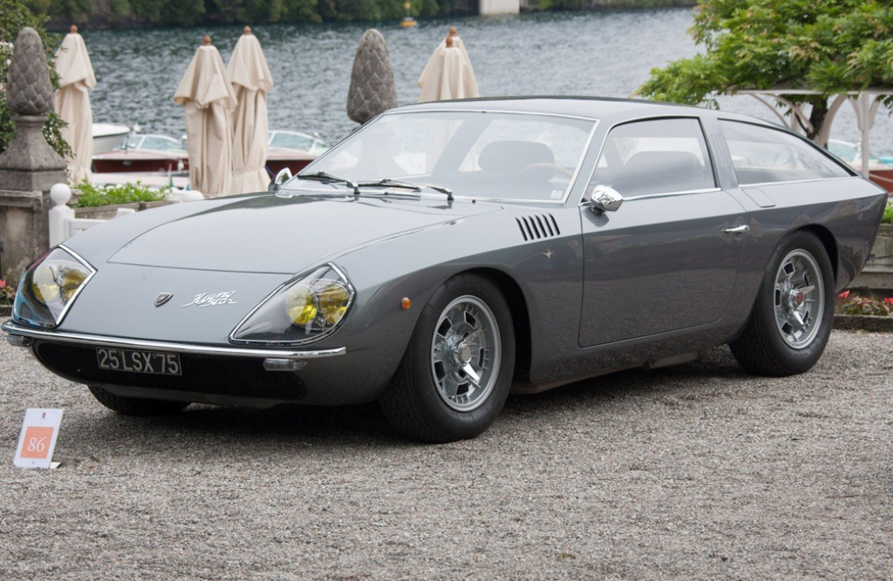

São capazes de acelerar a mais de 300 km/h, em poucos segundos. Esses ‘touros’ são as
preciosidades fabricadas pelo fabricante italiano LAMBORGHINI,
sinônimo de superesportivos exclusivos e nervosos que cativam os amantes da velocidade.
Tudo começou por causa de uma resposta grosseira e malcriada. O fabricante de tratores agrícolas, ar condicionado e calefação, Ferruccio Lamborghini tinha uma Ferrari F250 GT que sofria de problemas crônicos de embreagem. Um dia, reclamou do defeito diretamente com o comendador Enzo Ferrari e foi destratado. “Você não entende nada de carros. Vá dirigir tratores!” teria respondido grosseiramente o fundador da Ferrari. Sentindo-se ofendido ele respondeu: “Eu criarei uma marca melhor que a sua!”. Ferruccio não se deu por vencido. Conta a história que ele consertou a Ferrari de uma vez por todas, usando uma embreagem de trator. Mais do que isso: resolveu fabricar automóveis superesportivos que não descem dores de cabeça e fossem mais dóceis com seus proprietários. Foi então que fundou, no dia 30 de outubro de 1963, a FERRUCCIO LAMBORGHINI AUTOMOBILI. Para sua vingança estar completa, montou sua nova empresa na cidade de Sant’Agata Bolognese, localizada à apenas 17 quilômetros de Modena, sede da Ferrari, e próximo a Bolonha, sede da tradicional Maserati.
LAMBORGHINI 350 GTV 1963
O primeiro protótipo da Lamborghini foi o 350 GTV (Gran Turismo Veloce), que tinha um motor V12 de 3.5 litros e 360 cv, alcançando 280 km/h, acelerando de 0 a 100 km/h em apenas 6.7 segundos, que fez sua estreia no Salão de Turin. No ano seguinte, o modelo de produção, batizado de 350 GT, foi revelado no Salão de Genebra. O carro vinha equipado com um motor V12 de 280 cv de potência, com suspensão independente, transmissão de 5 velocidades e freios a disco. Em 1965 a fábrica construía um interessante chassi, chamado de P400 que fez muito sucesso no Salão de Turin do mesmo ano.

LAMBORGHINI 4000 GT FLYING STAR 1965 14
No inverno, Ferruccio encomendou a Bertone uma carroceria para o modelo. Nascia um dos mais belos automóveis esportivos feitos por este estúdio em todos os tempos: o MIURA P400, desenhado por Marcello Gandini. Miura era uma raça de touro, uma das grandes paixões do fundador da empresa, que lançou muitos automóveis com nomes de raças. A fama da LAMBORGHINI como fabricante de carros espetaculares começava a crescer e conquistar admiradores.
LAMBORGHINI CHEETAH 1977
Tudo começou por causa de uma resposta grosseira e malcriada. O fabricante de tratores agrícolas, ar condicionado e calefação, Ferruccio Lamborghini tinha uma Ferrari F250 GT que sofria de problemas crônicos de embreagem. Um dia, reclamou do defeito diretamente com o comendador Enzo Ferrari e foi destratado. “Você não entende nada de carros. Vá dirigir tratores!” teria respondido grosseiramente o fundador da Ferrari. Sentindo-se ofendido ele respondeu: “Eu criarei uma marca melhor que a sua!”. Ferruccio não se deu por vencido. Conta a história que ele consertou a Ferrari de uma vez por todas, usando uma embreagem de trator. Mais do que isso: resolveu fabricar automóveis superesportivos que não descem dores de cabeça e fossem mais dóceis com seus proprietários. Foi então que fundou, no dia 30 de outubro de 1963, a FERRUCCIO LAMBORGHINI AUTOMOBILI. Para sua vingança estar completa, montou sua nova empresa na cidade de Sant’Agata Bolognese, localizada à apenas 17 quilômetros de Modena, sede da Ferrari, e próximo a Bolonha, sede da tradicional Maserati.
LAMBORGHINI DIABLO 1990
O primeiro protótipo da Lamborghini foi o 350 GTV (Gran Turismo Veloce), que tinha um motor V12 de 3.5 litros e 360 cv, alcançando 280 km/h, acelerando de 0 a 100 km/h em apenas 6.7 segundos, que fez sua estreia no Salão de Turin. No ano seguinte, o modelo de produção, batizado de 350 GT, foi revelado no Salão de Genebra. O carro vinha equipado com um motor V12 de 280 cv de potência, com suspensão independente, transmissão de 5 velocidades e freios a disco. Em 1965 a fábrica construía um interessante chassi, chamado de P400 que fez muito sucesso no Salão de Turin do mesmo ano.
LAMBORGHINI GALLARDO COUPE 2006 1
No inverno, Ferruccio encomendou a Bertone uma carroceria para o modelo. Nascia um dos mais belos automóveis esportivos feitos por este estúdio em todos os tempos: o MIURA P400, desenhado por Marcello Gandini. Miura era uma raça de touro, uma das grandes paixões do fundador da empresa, que lançou muitos automóveis com nomes de raças. A fama da LAMBORGHINI como fabricante de carros espetaculares começava a crescer e conquistar admiradores.
LAMBORGHINI ISLERO 1968 01
Em 1968, o modelo ISLERO 400 GT foi apresentado no Salão de Genebra com chassi de alumínio, um motor V12 de 320 cv, suspensão independente e freios a disco. O visual surpreendente do modelo Espada (primeiro modelo da marca com capacidade para quatro pessoas) foi outra novidade do mercado apresentada pela LAMBORGHINI. Era baseado no protótipo Marzal do estúdio Bertone e combinava a aparência, desempenho e dirigibilidade de um esportivo com o conforto e luxo de uma perua. O Espada foi um dos carros mais bem sucedidos da LAMBORGHINI.
lamborghini Egoista
Nos anos 70 o futuro era incerto para a LAMBORGHINI. Sua divisão de tratores fora vendida à Fiat, e ao mesmo tempo, o mercado de automóveis superesportivos andava em baixa por causa das constantes crises do petróleo. Falida, a empresa foi entregue a um grupo de investidores suíços, e Ferruccio viveu o resto de seus dias longe de problemas em uma bela propriedade rural. Ele morreu aos 76 anos de idade em 1993. O modelo Countach, de 1974, foi a última criação da marca sob o domínio de Ferruccio.
lamborghini huracan 2020
No ano de 1977, a montadora desbravava novos caminhos com o lançamento do Cheetah, modelo off-road (fora de estrada) que entrou no mercado dos veículos militares. Quatro anos depois, o LM001, sucessor do Cheetah, começou a ser produzido. Os suíços que passaram a administrar a Lamborghini não demoraram a revender a empresa para o grupo americano Chrysler. A montadora começou então a preparar um motor para equipar carros de Fórmula 1. A estréia nesta competição automobilística ocorreu em 1989, mas nunca alcançou o sucesso esperado.
Lamborghini Terzo Millennio Concept 2017
E foi neste tempo que nasceu o superesportivo DIABLO, no ano de 1990. Com um design surpreendente, o superesportivo mais uma vez vinha equipado com o motor 4.0 litros V12, chassi tubular, portas que abriam para cima (conhecidas como asas de gaivota) e 375 cv de potência. Apesar do sucesso do novo modelo, a Chrysler também começou a viver dificuldades financeiras e, mais uma vez, a LAMBORGHINI teve que ser passada adiante, agora para um grupo da Indonésia, que no fim dos anos 90, se viu em meio a uma grave crise. Novamente parecia que o fim seria inevitável da marca italiana. Aí, aconteceu uma surpresa: a Audi (que pertence ao grupo Volkswagen) comprou a LAMBORGHINI em 1998 e salvou a montadora italiana da falência.
Lamborghini Urus
Inicialmente a montadora alemã seguiu produzindo e vendendo o Diablo, mas fazia tempo que a marca não lançava um novo modelo. No Salão de Frankfurt de 2001, exatos 11 anos após a apresentação, o inesquecível modelo Diablo, enfim, ganhou um sucessor: o superesportivo Murciélago. A palavra significa ‘morcego’ em espanhol, mas não tem nada a ver com os mamíferos voadores. Murciélago era o nome de um touro tão nobre que, em 1879, foi poupado em uma tourada e transformado em reprodutor. Nos anos seguintes a montadora italiana lançou modelos exclusivos como o Gallardo, o Reventón, e mais recentemente o Aventador e o Huracán, e continua criando superesportivos cobiçados por muitos, mas produzidos para poucos que podem pagar milhões de dólares por suas máquinas indomáveis.